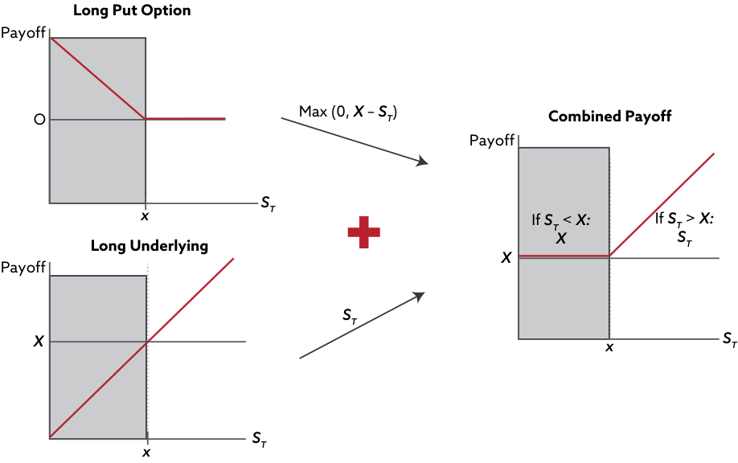
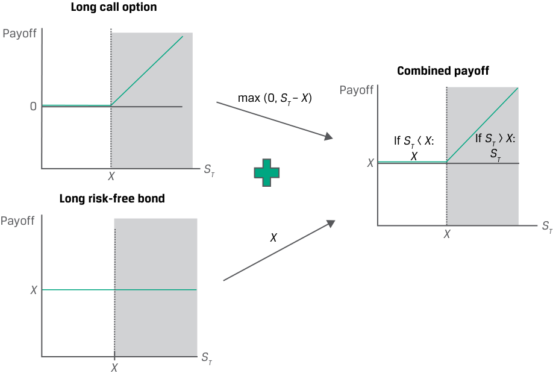
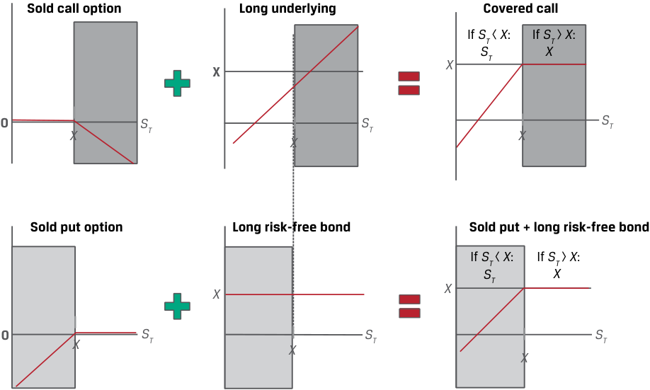
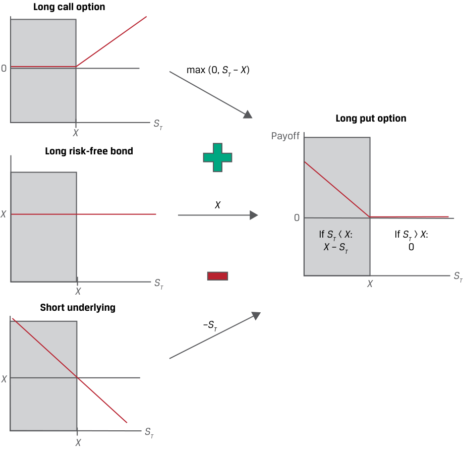
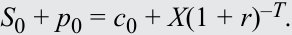
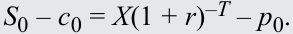
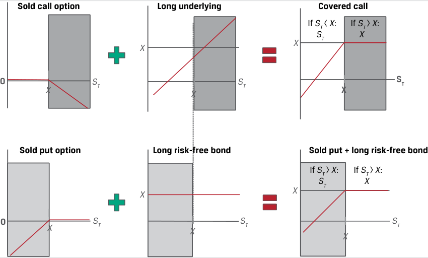

Learning Module 9 Option Replication Using Put–Call Parity - Part 1: Introduction
Volume 7: Derivatives
Learning Module 9 Option Replication Using Put–Call Parity
Part 1/2: Introduction (PDF Pages 205–216)
Tập 7: Công cụ Phái sinh (Derivatives)
Học phần 9: Mô phỏng Quyền chọn Sử dụng Ngang giá Quyền chọn Bán–Quyền chọn Mua (Option Replication Using Put–Call Parity)
Phần 1/2: Giới thiệu (Trang PDF 205–216)
L E A R N I N G M O D U L E
H Ọ C P H Ầ N
9
9
Option Replication Using Put–Call Parity
Mô phỏng Quyền chọn Sử dụng Ngang giá Quyền chọn Bán–Quyền chọn Mua (Option Replication Using Put–Call Parity)
LEARNING OUTCOMES
MỤC TIÊU HỌC TẬP (LEARNING OUTCOMES)
Mastery The candidate should be able to:
| Mức độ thành thạo Ứng viên cần có khả năng: |
|---|
| giải thích ngang giá quyền chọn bán–quyền chọn mua (put–call parity) đối với quyền chọn kiểu châu Âu |
| giải thích ngang giá kỳ hạn quyền chọn bán–quyền chọn mua (put–call forward parity) đối với quyền chọn kiểu châu Âu |
explain put–call parity for European options explain put–call forward parity for European options
INTRODUCTION
GIỚI THIỆU (INTRODUCTION)
1
1
Previous lessons examined the payoff and profit profiles of call options and put options, the upper and lower bounds of an option’s value, and the factors impacting option values. In doing so, we contrasted the asymmetry of one-sided option payoffs with the linear or symmetric payoff of forwards and underlying assets.
Các bài học trước đã xem xét hồ sơ kết quả thanh toán (payoff) và lợi nhuận (profit) của quyền chọn mua và quyền chọn bán, các cận trên và cận dưới đối với giá trị của một quyền chọn, và các nhân tố tác động đến giá trị quyền chọn. Qua đó, chúng ta đã đối chiếu tính bất đối xứng của các kết quả thanh toán quyền chọn một phía (one-sided option payoffs) với kết quả thanh toán tuyến tính hay đối xứng của các hợp đồng kỳ hạn và các tài sản cơ sở.
We now extend this analysis further to show that there are ways to combine options to have an equivalent payoff to that of the underlying and a risk-free asset as well as a forward commitment. In the first lesson, we demonstrate that the value of a European call may be used to derive the value of a European put option with the same underlying details, and vice versa, under a no-arbitrage condition referred to as put–call parity. In the second lesson, we show how this may be extended to forward commitments and how the put–call parity relationship may be applied to option and other investment strategies. We will focus on European options on underlying assets with no income or benefit.
Bây giờ chúng ta mở rộng phân tích này xa hơn để chỉ ra rằng có những cách thức kết hợp các quyền chọn nhằm tạo ra kết quả thanh toán tương đương với kết quả thanh toán của tài sản cơ sở và một tài sản phi rủi ro cũng như của một cam kết kỳ hạn. Trong bài học đầu tiên, chúng ta chứng minh rằng giá trị của một quyền chọn mua kiểu châu Âu có thể được sử dụng để suy ra giá trị của một quyền chọn bán kiểu châu Âu có cùng các thông số tài sản cơ sở, và ngược lại, theo một điều kiện không kinh doanh chênh lệch giá được gọi là ngang giá quyền chọn bán–quyền chọn mua (put–call parity). Trong bài học thứ hai, chúng ta chỉ ra cách thức mối quan hệ này có thể được mở rộng sang các cam kết kỳ hạn và cách thức mối quan hệ ngang giá quyền chọn bán–quyền chọn mua có thể được áp dụng cho các chiến lược quyền chọn và các chiến lược đầu tư khác. Chúng ta sẽ tập trung vào các quyền chọn kiểu châu Âu trên các tài sản cơ sở không có thu nhập hay lợi ích.
LEARNING MODULE OVERVIEW
TỔNG QUAN HỌC PHẦN (LEARNING MODULE OVERVIEW)
-
Put–call parity establishes a relationship that allows the price of a call option to be derived from the price of a put option with the same underlying details and vice versa.
-
Put–call parity holds for European options with the same exercise price and expiration date, representing a no-arbitrage relationship between put option, call option, underlying asset, and risk-free asset prices.
-
If put–call parity does not hold, then riskless arbitrage profit opportunities may be available to investors.
-
Ngang giá quyền chọn bán–quyền chọn mua (put–call parity) thiết lập một mối quan hệ cho phép mức giá của một quyền chọn mua được suy ra từ mức giá của một quyền chọn bán có cùng các thông số tài sản cơ sở và ngược lại.
-
Ngang giá quyền chọn bán–quyền chọn mua áp dụng cho các quyền chọn kiểu châu Âu có cùng giá thực hiện và ngày đáo hạn, đại diện cho một mối quan hệ không kinh doanh chênh lệch giá giữa giá quyền chọn bán, giá quyền chọn mua, giá tài sản cơ sở, và giá tài sản phi rủi ro.
-
Nếu ngang giá quyền chọn bán–quyền chọn mua không được duy trì, thì các cơ hội thu lợi nhuận kinh doanh chênh lệch giá phi rủi ro (riskless arbitrage profit opportunities) có thể xuất hiện cho các nhà đầu tư.
-
Put–call forward parity extends the put–call parity relationship to forward contracts given the equivalence of an underlying asset position and a long forward contract plus a risk-free bond.
-
Under put–call forward parity, we may demonstrate that a purchased put option and a sold call option are equivalent to a long risk-free bond and short forward position, and a sold put and purchased call are equivalent to a long forward and short risk-free bond.
-
Put–call parity may be applied beyond option-based strategies in finance—for example, to demonstrate that equity holders have a position equivalent to a purchased call option on the value of the firm with unlimited upside, while debtholders have a sold put option position on firm value with limited upside.
-
Ngang giá kỳ hạn quyền chọn bán–quyền chọn mua (put–call forward parity) mở rộng mối quan hệ ngang giá quyền chọn bán–quyền chọn mua sang các hợp đồng kỳ hạn dựa trên sự tương đương giữa một vị thế tài sản cơ sở và một hợp đồng mua kỳ hạn cộng với một trái phiếu phi rủi ro.
-
Theo ngang giá kỳ hạn quyền chọn bán–quyền chọn mua, chúng ta có thể chứng minh rằng một quyền chọn bán đã mua (purchased put option) và một quyền chọn mua đã bán (sold call option) tương đương với một vị thế mua trái phiếu phi rủi ro và bán kỳ hạn, còn một quyền chọn bán đã bán và một quyền chọn mua đã mua tương đương với một vị thế mua kỳ hạn và bán trái phiếu phi rủi ro.
-
Ngang giá quyền chọn bán–quyền chọn mua có thể được áp dụng vượt ra ngoài phạm vi các chiến lược dựa trên quyền chọn trong tài chính—ví dụ, để chứng minh rằng các cổ đông nắm giữ một vị thế tương đương với một quyền chọn mua đã mua (purchased call option) trên giá trị của doanh nghiệp với tiềm năng tăng giá không giới hạn, trong khi các chủ nợ nắm giữ một vị thế quyền chọn bán đã bán (sold put option) trên giá trị doanh nghiệp với tiềm năng tăng giá có giới hạn (cùng với một trái phiếu phi rủi ro).
LEARNING MODULE SELF-ASSESSMENT
TỰ ĐÁNH GIÁ HỌC PHẦN (LEARNING MODULE SELF-ASSESSMENT)
These initial questions are intended to help you gauge your current level of understanding of this learning module.
Những câu hỏi ban đầu này nhằm giúp bạn tự đánh giá mức độ hiểu biết hiện tại của mình về học phần này.
- Which of the following statements correctly describes the equivalent to a long position in an underlying according to put–call parity?
-
A. Long a put option on the underlying, short a call option on the underlying, and long a risk-free bond
-
B. Short a put option on the underlying, long a call option on the underlying, and long a risk-free bond
-
C. Short a put option on the underlying, long a call option on the underlying, and short a risk-free bond
- Phát biểu nào sau đây mô tả đúng về vị thế tương đương với một vị thế mua tài sản cơ sở (long position in an underlying) theo ngang giá quyền chọn bán–quyền chọn mua (put–call parity)?
-
A. Mua một quyền chọn bán trên tài sản cơ sở, bán một quyền chọn mua trên tài sản cơ sở, và mua một trái phiếu phi rủi ro
-
B. Bán một quyền chọn bán trên tài sản cơ sở, mua một quyền chọn mua trên tài sản cơ sở, và mua một trái phiếu phi rủi ro
-
C. Bán một quyền chọn bán trên tài sản cơ sở, mua một quyền chọn mua trên tài sản cơ sở, và bán một trái phiếu phi rủi ro
Solution:
Lời giải:
B is correct. Put–call parity demonstrates that a long underlying position is equivalent to a sold put option, a purchased call option, and a long risk-free bond. This is shown in the following equation:
Put–call parity: S 0 + p 0 = c 0 + X (1 + r )–T implies S 0 = – p 0 + c 0 + X (1 + r )–T.
B là đáp án đúng. Ngang giá quyền chọn bán–quyền chọn mua chứng minh rằng một vị thế mua tài sản cơ sở tương đương với một quyền chọn bán đã bán (sold put option), một quyền chọn mua đã mua (purchased call option), và một vị thế mua trái phiếu phi rủi ro (long risk-free bond). Điều này được thể hiện trong phương trình sau:
-
Identify which of the following positions has the same no-arbitrage value as which portfolio under put–call parity:
-
Long call option ( c 0) A. Long underlying, short risk-free bond, and short call option
-
Short risk-free bond (– X (1 + r )–T ) B. Long underlying, long put option, and short risk-free bond
-
Short put option (– p 0) C. Short underlying, long call option, and short put option
- Xác định vị thế nào sau đây có cùng giá trị không kinh doanh chênh lệch giá với danh mục đầu tư nào theo ngang giá quyền chọn bán–quyền chọn mua:
Solution:
| Vị thế | Danh mục đầu tư tương đương |
|---|---|
| 1. Mua quyền chọn mua ($c_0$) | A. Mua tài sản cơ sở, bán trái phiếu phi rủi ro, và bán quyền chọn mua |
| 2. Bán trái phiếu phi rủi ro ($-X(1 + r)^{-T}$) | B. Mua tài sản cơ sở, mua quyền chọn bán, và bán trái phiếu phi rủi ro |
| 3. Bán quyền chọn bán ($-p_0$) | C. Bán tài sản cơ sở, mua quyền chọn mua, và bán quyền chọn bán |
Recall that the put–call parity relationship may be expressed as
Lời giải:
S 0 + p 0 = c 0 + X (1 + r )–T .
Hãy nhớ lại rằng mối quan hệ ngang giá quyền chọn bán–quyền chọn mua có thể được biểu diễn là:
- B is correct. A long call option position is the no-arbitrage equivalent of a long underlying position, a long put option, and a short risk-free bond position.
- B là đáp án đúng. Một vị thế mua quyền chọn mua là tương đương không kinh doanh chênh lệch giá với một vị thế mua tài sản cơ sở, mua quyền chọn bán, và vị thế bán trái phiếu phi rủi ro.
-
C is correct. A short risk-free bond position is equivalent to a short underlying position, a long call option, and a short put option. 3. A is correct. A short put option is equivalent to a long underlying position, a short risk-free bond, and a short call option.
-
Which of the following statements correctly describes a synthetic protective put position according to put–call forward parity? A. A long forward contract on the underlying, a long put option on the underlying, and short a risk-free bond
- C là đáp án đúng. Một vị thế bán trái phiếu phi rủi ro tương đương với một vị thế bán tài sản cơ sở, mua quyền chọn mua, và bán quyền chọn bán.
-
A là đáp án đúng. Một vị thế bán quyền chọn bán tương đương với một vị thế mua tài sản cơ sở, bán trái phiếu phi rủi ro, và bán quyền chọn mua.
-
Phát biểu nào sau đây mô tả đúng về một vị thế quyền chọn bán bảo vệ tổng hợp (synthetic protective put position) theo ngang giá kỳ hạn quyền chọn bán–quyền chọn mua (put–call forward parity)?
-
A. Một hợp đồng mua kỳ hạn trên tài sản cơ sở, một vị thế mua quyền chọn bán trên tài sản cơ sở, và bán một trái phiếu phi rủi ro
-
B. Một hợp đồng bán kỳ hạn trên tài sản cơ sở, một vị thế mua quyền chọn bán trên tài sản cơ sở, và bán một trái phiếu phi rủi ro
-
C. Một hợp đồng bán kỳ hạn trên tài sản cơ sở, một vị thế bán quyền chọn bán trên tài sản cơ sở, và bán một trái phiếu phi rủi ro
B. A short forward contract on the underlying, a long put option on the underlying, and short a risk-free bond
Lời giải:
C. A short forward contract on the underlying, a short put option on the underlying, and short a risk-free bond
A là đáp án đúng. Công thức cho ngang giá kỳ hạn quyền chọn bán–quyền chọn mua như sau:
Solution: A is correct. The formula for put–call forward parity is as follows: F 0( T )(1 + r )–T + p 0 = c 0 + X (1 + r )–T . Rearranging the terms as follows shows the synthetic protective put position on the left-hand side of the equation: F 0( T )(1 + r )–T + p 0 – X (1 + r )–T = c 0.
Lưu ý: Một vị thế quyền chọn bán bảo vệ tổng hợp (synthetic protective put) bao gồm mua hợp đồng kỳ hạn, mua trái phiếu phi rủi ro mệnh giá $F_0(T)$ (tức $F_0(T)(1+r)^{-T}$), và mua quyền chọn bán ($p_0$). Nếu xét phương trình $F_0(T)(1 + r)^{-T} + p_0 - X(1 + r)^{-T} = c_0$ như trong lời giải gốc của giáo trình khi biểu diễn vế trái tương đương với $c_0$, các thành phần ở vế trái gồm mua hợp đồng kỳ hạn trên tài sản cơ sở, mua quyền chọn bán trên tài sản cơ sở, và bán một trái phiếu phi rủi ro (mệnh giá $X$).
- Phát biểu nào sau đây mô tả đúng nhất quyền đòi nợ của cổ đông (shareholder's claim) xét dưới góc độ kết quả thanh toán của một quyền chọn?
- A. Kết quả thanh toán của cổ đông giống với kết quả thanh toán của một quyền chọn bán trên giá trị doanh nghiệp.
- B. Kết quả thanh toán của cổ đông giống với kết quả thanh toán của một quyền chọn mua có bảo đảm (covered call option) trên giá trị doanh nghiệp.
- C. Kết quả thanh toán của cổ đông giống với kết quả thanh toán của một quyền chọn mua trên giá trị doanh nghiệp.
- Which of the following statements best describes a shareholder’s claim in terms of an option payoff?
-
A. Shareholder payoff resembles the payoff of a put option on firm value. B. Shareholder payoff resembles the payoff of a covered call option on firm value.
-
C. Shareholder payoff resembles the payoff of a call option on firm value.
-
Solution:
Lời giải:
C is correct. When considering shareholder claims in option terms, the shareholder payoff resembles a call option on firm value.
C là đáp án đúng. Khi xem xét quyền đòi nợ của cổ đông dưới góc độ quyền chọn, kết quả thanh toán của cổ đông giống với một quyền chọn mua trên giá trị doanh nghiệp (call option on firm value).
PUT–CALL PARITY
NGANG GIÁ QUYỀN CHỌN BÁN–QUYỀN CHỌN MUA (PUT–CALL PARITY)
explain put–call parity for European options
giải thích ngang giá quyền chọn bán–quyền chọn mua (put–call parity) đối với quyền chọn kiểu châu Âu
A prior lesson contrasted no-arbitrage pricing conditions and the replication of cash flows for forward commitments and contingent claims. Forwards have zero initial value and their certain payoff, which is replicated at inception by borrowing to purchase the underlying or selling the underlying and lending the sale proceeds. Option buyers pay an upfront premium, and their contingent payoff profiles lead us to establish upper and lower no-arbitrage price bounds. Option replication is similar to that of a forward but involves borrowing or lending to buy or sell a proportion of the underlying, which is adjusted as the moneyness of an option changes. We now extend this analysis using a combination of positions.
Một bài học trước đã đối chiếu các điều kiện định giá không kinh doanh chênh lệch giá và việc mô phỏng các dòng tiền đối với các cam kết kỳ hạn và các quyền đòi nợ có điều kiện. Các hợp đồng kỳ hạn có giá trị ban đầu bằng không và kết quả thanh toán chắc chắn (certain payoff) của chúng được mô phỏng tại thời điểm khởi tạo bằng cách đi vay để mua tài sản cơ sở hoặc bán tài sản cơ sở và đem cho vay số tiền thu được từ việc bán. Người mua quyền chọn trả một khoản phí quyền chọn trả trước (upfront premium), và hồ sơ kết quả thanh toán có điều kiện (contingent payoff profiles) của chúng dẫn chúng ta đến việc thiết lập các cận giá trên và cận giá dưới không có kinh doanh chênh lệch giá. Việc mô phỏng quyền chọn tương tự như của hợp đồng kỳ hạn nhưng liên quan đến việc đi vay hoặc cho vay để mua hoặc bán một tỷ lệ (proportion) của tài sản cơ sở, tỷ lệ này được điều chỉnh khi trạng thái giá trị (moneyness) của quyền chọn thay đổi. Bây giờ chúng ta mở rộng phân tích này bằng cách sử dụng sự kết hợp của các vị thế.
In this section, we show how combining cash and derivative instruments into a portfolio in a certain way enables us to price and value these positions without directly modeling them using no-arbitrage conditions. Consider an investor whose goal is to benefit from upward movements in the value of an underlying but who wants to protect her investment from downward movements in the underlying’s value. Consider the following two portfolios, shown in Exhibit 1:
Trong phần này, chúng ta sẽ chỉ ra cách thức việc kết hợp các công cụ tiền mặt và công cụ phái sinh vào một danh mục đầu tư theo một cách nhất định cho phép chúng ta định giá và xác định giá trị các vị thế này mà không cần trực tiếp mô hình hóa chúng bằng cách sử dụng các điều kiện không kinh doanh chênh lệch giá. Hãy xem xét một nhà đầu tư có mục tiêu là hưởng lợi từ các biến động tăng lên trong giá trị của một tài sản cơ sở nhưng lại muốn bảo vệ khoản đầu tư của mình khỏi các biến động giảm xuống trong giá trị của tài sản cơ sở đó. Hãy xem xét hai danh mục đầu tư sau đây, được thể hiện trong Bảng 1 (Exhibit 1):
1. At t = 0, an investor purchases a call option ( c 0) on an underlying with an exercise price of X and a risk-free bond today that pays X at t = T . The cost of this strategy is c 0 + X (1 + r )–T , where we assume the option expires at time T .
1. Tại thời điểm $t = 0$, một nhà đầu tư mua một quyền chọn mua ($c_0$) trên một tài sản cơ sở với giá thực hiện là $X$ và mua một trái phiếu phi rủi ro ngày hôm nay sẽ trả số tiền $X$ tại thời điểm $t = T$. Chi phí của chiến lược này là $c_0 + X(1 + r)^{-T}$, trong đó chúng ta giả định quyền chọn đáo hạn tại thời điểm $T$.
2. At t = 0, an investor purchases an underlying unit ( S 0) and a put option on the underlying ( p 0) with an exercise price of X at t = T . The cost of this strategy is p 0 + S 0.
2. Tại thời điểm $t = 0$, một nhà đầu tư mua một đơn vị tài sản cơ sở ($S_0$) và mua một quyền chọn bán trên tài sản cơ sở đó ($p_0$) với giá thực hiện là $X$ tại thời điểm $t = T$. Chi phí của chiến lược này là $p_0 + S_0$.
Exhibit 1 shows the payoff of the individual components of these two portfolios.
Bảng 1 thể hiện kết quả thanh toán (payoff) của từng thành phần riêng lẻ thuộc hai danh mục đầu tư này.
Exhibit 1: Payoffs at Time T for Two Portfolios
Bảng 1: Kết quả Thanh toán tại Thời điểm $T$ đối với Hai Danh mục Đầu tư (Exhibit 1: Payoffs at Time $T$ for Two Portfolios)

Chú thích hình ảnh: - Danh mục 1 (bên trái): Kết hợp giữa Mua quyền chọn mua (Long call option) có kết quả thanh toán $\max(0, S_T - X)$ và Mua trái phiếu phi rủi ro (Long risk-free bond) có kết quả thanh toán không đổi bằng $X$. - Danh mục 2 (bên phải): Kết hợp giữa Mua quyền chọn bán (Long put option) có kết quả thanh toán $\max(0, X - S_T)$ và Mua tài sản cơ sở (Long underlying) có kết quả thanh toán bằng $S_T$.
At first glance, these portfolios appear to offer the investor a similar opportunity to benefit from underlying asset appreciation without exposure to an underlying price decline below the exercise price.
Thoạt nhìn, các danh mục đầu tư này dường như mang lại cho nhà đầu tư một cơ hội tương tự nhau để hưởng lợi từ sự tăng giá của tài sản cơ sở mà không phải chịu rủi ro khi giá tài sản cơ sở giảm xuống dưới mức giá thực hiện.
In the first case (Portfolio 1), the investor buys a call option with a positive payoff if the underlying asset price rises above the exercise price ( ST > X ) and invests cash in a risk-free bond. Since the risk-free asset pays X at time T , the investor pays c 0 + X (1 + r )–T at time t = 0. This combination of a purchased call and a risk-free bond is known as a fiduciary call and is shown in Exhibit 2.
Trong trường hợp thứ nhất (Danh mục 1), nhà đầu tư mua một quyền chọn mua có kết quả thanh toán dương nếu giá tài sản cơ sở tăng lên trên mức giá thực hiện ($S_T > X$) và đầu tư tiền mặt vào một trái phiếu phi rủi ro. Vì tài sản phi rủi ro trả số tiền $X$ tại thời điểm $T$, nhà đầu tư trả $c_0 + X(1 + r)^{-T}$ tại thời điểm $t = 0$. Sự kết hợp giữa một quyền chọn mua đã mua và một trái phiếu phi rủi ro này được gọi là quyền chọn mua ủy thác (fiduciary call) và được thể hiện trong Bảng 2 (Exhibit 2).
Exhibit 2: Portfolio 1 (Fiduciary Call) Payoff at Time T
Bảng 2: Kết quả Thanh toán của Danh mục 1 (Quyền chọn Mua Ủy thác – Fiduciary Call) tại Thời điểm $T$ (Exhibit 2: Portfolio 1 (Fiduciary Call) Payoff at Time $T$)

Chú thích hình ảnh: - Long call option: Mua quyền chọn mua (nhận $0$ nếu $S_T < X$, nhận $S_T - X$ nếu $S_T > X$). - Long risk-free bond: Mua trái phiếu phi rủi ro (luôn nhận $X$). - Combined payoff (Kết quả thanh toán kết hợp): Nhận $X$ nếu $S_T < X$; nhận $S_T$ nếu $S_T > X$.
In the second instance (Portfolio 2) in Exhibit 1, the investor pays S 0 + p 0 at inception and is hedged if the underlying price falls below X . This strategy of holding an underlying asset and purchasing a put on the same asset is sometimes called a protective put . The payoff for Portfolio 2 at time T is shown in Exhibit 3.
Trong trường hợp thứ hai (Danh mục 2) ở Bảng 1, nhà đầu tư trả $S_0 + p_0$ tại thời điểm khởi tạo và được phòng ngừa rủi ro (hedged) nếu giá tài sản cơ sở giảm xuống dưới mức $X$. Chiến lược nắm giữ một tài sản cơ sở và mua một quyền chọn bán trên cùng tài sản đó đôi khi được gọi là quyền chọn bán bảo vệ (protective put). Kết quả thanh toán của Danh mục 2 tại thời điểm $T$ được thể hiện trong Bảng 3 (Exhibit 3).
Exhibit 3: Portfolio 2 (Protective Put) Payoff at Time T
Bảng 3: Kết quả Thanh toán của Danh mục 2 (Quyền chọn Bán Bảo vệ – Protective Put) tại Thời điểm $T$ (Exhibit 3: Portfolio 2 (Protective Put) Payoff at Time $T$)

Chú thích hình ảnh: - Biểu đồ minh họa sự tương đương của kết quả thanh toán tại thời điểm $T$ (lưu ý: hình ảnh gốc từ PDF hiển thị biểu đồ của Covered call và Sold put + long risk-free bond, còn đối với Protective put thì kết quả thanh toán kết hợp của Long put option + Long underlying bằng $X$ khi $S_T < X$ và bằng $S_T$ khi $S_T > X$).
Despite their differences, these two portfolios have identical payoff profiles, as evidenced by Exhibit 2 and Exhibit 3. Recall that no-arbitrage conditions require two assets with identical future cash flows to trade at the same price, ignoring transaction costs. In Exhibit 4, we evaluate this in the case of the two portfolios by comparing their cash flows under all possible scenarios at time t = T .
Bất chấp những điểm khác biệt về cấu phần, hai danh mục đầu tư này có hồ sơ kết quả thanh toán giống hệt nhau, như được chứng minh bởi Bảng 2 và Bảng 3. Hãy nhớ lại rằng các điều kiện không kinh doanh chênh lệch giá đòi hỏi hai tài sản có các dòng tiền tương lai giống hệt nhau phải được giao dịch tại cùng một mức giá, khi bỏ qua chi phí giao dịch. Trong Bảng 4 (Exhibit 4), chúng ta đánh giá điều này trong trường hợp của hai danh mục đầu tư bằng cách so sánh các dòng tiền của chúng dưới tất cả các kịch bản có thể xảy ra tại thời điểm $t = T$.
Exhibit 4: Protective Put vs. Fiduciary Call at Expiration
Bảng 4: Quyền chọn Bán Bảo vệ (Protective Put) so với Quyền chọn Mua Ủy thác (Fiduciary Call) khi Đáo hạn (Exhibit 4: Protective Put vs. Fiduciary Call at Expiration)
| Portfolio Position | Put Exercised (ST <X) |
No Exercise (ST =X) |
Call Exercised (ST >X) |
|---|---|---|---|
| Protective Put: | |||
| Underlying Asset | ST | ST | ST |
| Put Option | X–ST | 0 | 0 |
| Total: | X | ST(=X) | ST |
| Fiduciary Call: | |||
| Call Option | 0 | 0 | ST–X |
| Risk-Free Asset | X | X | X |
| Total: | X | X(=ST) | ST |
| Vị thế Danh mục (Portfolio Position) | Thực hiện Quyền chọn Bán ($S_T < X$) | Không Thực hiện ($S_T = X$) | Thực hiện Quyền chọn Mua ($S_T > X$) |
|---|---|---|---|
| Quyền chọn Bán Bảo vệ (Protective Put): | |||
| Tài sản cơ sở (Underlying Asset) | $S_T$ | $S_T$ | $S_T$ |
| Quyền chọn bán (Put Option) | $X - S_T$ | $0$ | $0$ |
| Tổng cộng (Total): | $X$ | $S_T \ (= X)$ | $S_T$ |
| Quyền chọn Mua Ủy thác (Fiduciary Call): | |||
| Quyền chọn mua (Call Option) | $0$ | $0$ | $S_T - X$ |
| Tài sản phi rủi ro (Risk-Free Asset) | $X$ | $X$ | $X$ |
| Tổng cộng (Total): | $X$ | $X \ (= S_T)$ | $S_T$ |
These two portfolios have cash flows that are identical at time T under each scenario, and the prices of these portfolios must be equal at t = 0 to satisfy the no-arbitrage condition in a relationship commonly referred to as put–call parity :
Hai danh mục đầu tư này có các dòng tiền giống hệt nhau tại thời điểm $T$ dưới mỗi kịch bản, và mức giá của các danh mục đầu tư này phải bằng nhau tại thời điểm $t = 0$ để thỏa mãn điều kiện không kinh doanh chênh lệch giá trong một mối quan hệ thường được gọi là ngang giá quyền chọn bán–quyền chọn mua (put–call parity):
S 0 + p 0 = c 0 + X (1 + r )–T .
In other words, under put–call parity, at t = 0 the price of the long underlying asset plus the long put must equal the price of the long call plus the risk-free asset.
Nói cách khác, theo ngang giá quyền chọn bán–quyền chọn mua, tại thời điểm $t = 0$, giá của vị thế mua tài sản cơ sở cộng với vị thế mua quyền chọn bán phải bằng với giá của vị thế mua quyền chọn mua cộng với tài sản phi rủi ro.
EXAMPLE 1
VÍ DỤ 1 (EXAMPLE 1)
Biomian Put–Call Parity
Ngang giá Quyền chọn Bán–Quyền chọn Mua đối với Cổ phiếu Biomian (Biomian Put–Call Parity)
In an earlier example, the Viswan Family Office (VFO) held non-dividend-paying Biomian shares currently priced ( S 0) at INR295 per share. VFO is considering the purchase of a six-month put on Biomian shares at an exercise price, X , of INR265. If VFO’s chief investment officer observes a traded six-month call option price of INR59 per share for the same INR265 exercise price, what should he expect to pay for the put per share if the relevant risk-free rate is 4%?
Trong một ví dụ trước đó, Văn phòng Quản lý Gia sản Viswan (VFO) nắm giữ cổ phiếu Biomian không trả cổ tức hiện đang có giá ($S_0$) là 295 INR mỗi cổ phiếu. VFO đang cân nhắc việc mua một quyền chọn bán kỳ hạn 6 tháng trên cổ phiếu Biomian tại mức giá thực hiện, $X$, là 265 INR. Nếu giám đốc đầu tư (CIO) của VFO quan sát thấy một quyền chọn mua kỳ hạn 6 tháng đang được giao dịch ở mức giá 59 INR mỗi cổ phiếu cho cùng mức giá thực hiện 265 INR, ông ấy nên kỳ vọng trả bao nhiêu cho quyền chọn bán trên mỗi cổ phiếu nếu lãi suất phi rủi ro có liên quan là 4%?
From Equation 1, the put–call parity relationship was shown as
Từ Phương trình 1, mối quan hệ ngang giá quyền chọn bán–quyền chọn mua được thể hiện là:
S 0 + p 0 = c 0 + X (1 + r )–T .
We can solve for the risk-free bond price as INR259.85 (= INR265(1.04)–0.5 ) and substitute into Equation 1:
Chúng ta có thể giải tìm giá trái phiếu phi rủi ro là $259,85\text{ INR} \ (= 265\text{ INR}(1,04)^{-0,5})$ và thay thế vào Phương trình 1:
INR295 + p 0 = INR59 + INR259.85.
p 0 = INR23.85.
VFO should expect to pay a six-month put option premium of p 0 = INR23.85.
VFO nên kỳ vọng trả mức phí quyền chọn bán kỳ hạn 6 tháng là $p_0 = 23,85\text{ INR}$.
Arbitrage profit opportunities arise if these portfolios trade at different prices. As in the case of individual assets, an investor able to borrow and lend at the risk-free rate can earn a riskless profit if either portfolio is mispriced, as shown in the following example.
Các cơ hội thu lợi nhuận kinh doanh chênh lệch giá (arbitrage profit opportunities) sẽ phát sinh nếu các danh mục đầu tư này giao dịch tại các mức giá khác nhau. Giống như trong trường hợp của các tài sản riêng lẻ, một nhà đầu tư có khả năng đi vay và cho vay ở mức lãi suất phi rủi ro có thể kiếm được một khoản lợi nhuận phi rủi ro nếu một trong hai danh mục đầu tư bị định giá sai (mispriced), như được trình bày trong ví dụ sau đây.
EXAMPLE 2
VÍ DỤ 2 (EXAMPLE 2)
VFO Put–Call Parity Arbitrage Opportunity
Cơ hội Kinh doanh Chênh lệch giá theo Ngang giá Quyền chọn Bán–Quyền chọn Mua của VFO (VFO Put–Call Parity Arbitrage Opportunity)
As in Example 1, the Viswan Family Office holds non-dividend-paying Biomian shares at a price ( S 0) of INR295 per share. VFO is considering the purchase of a put for which it expects to pay INR23.85 but which is instead currently priced at INR30. Assuming a risk-free rate of 4%, identify the arbitrage opportunity and the steps VFO might take to earn a riskless profit.
Giống như trong Ví dụ 1, Văn phòng Quản lý Gia sản Viswan (VFO) nắm giữ cổ phiếu Biomian không trả cổ tức tại mức giá ($S_0$) là 295 INR mỗi cổ phiếu. VFO đang cân nhắc việc mua một quyền chọn bán mà họ kỳ vọng trả 23,85 INR nhưng thay vào đó hiện đang được định giá ở mức 30 INR. Giả sử lãi suất phi rủi ro là 4%, hãy xác định cơ hội kinh doanh chênh lệch giá và các bước mà VFO có thể thực hiện để kiếm được một khoản lợi nhuận phi rủi ro.
From Equation 1, the put–call parity relationship is
Từ Phương trình 1, mối quan hệ ngang giá quyền chọn bán–quyền chọn mua là:
S 0 + p 0 = c 0 + X (1 + r )–T .
Substituting the values from Example 1 and the current put price into Equation 1 gives us the following result:
Thay thế các giá trị từ Ví dụ 1 và mức giá quyền chọn bán hiện tại vào Phương trình 1 mang lại cho chúng ta kết quả sau:
INR295 + INR30 > INR59 + INR259.85,
so, S 0 + p 0 > c 0 + X (1 + r )–T .
vì vậy, $S_0 + p_0 > c_0 + X(1 + r)^{-T}$.
By selling the put and the shares and purchasing the call and the risk-free asset at t = 0, VFO has a positive cash flow of INR6.15 (= INR295 + INR30 – INR59 – INR259.85), or S 0 + p 0 – c 0 – X (1 + r )–T , as shown in the following diagram.
Bằng cách bán quyền chọn bán và bán cổ phiếu đồng thời mua quyền chọn mua và tài sản phi rủi ro tại thời điểm $t = 0$, VFO có được một dòng tiền dương là $6,15\text{ INR} \ (= 295\text{ INR} + 30\text{ INR} - 59\text{ INR} - 259,85\text{ INR})$, hay $S_0 + p_0 - c_0 - X(1 + r)^{-T}$, như được thể hiện trong bảng dưới đây.
| Arbitrage Position | Cash Flow att = 0 |
Put Exer- cised (ST <X) |
No Exercise (ST =X) |
Call Exercised (ST >X) |
|---|---|---|---|---|
| Protective Put: | ||||
| Sell Underlying Asset |
_S_0 | –ST | –ST | –ST |
| Sell Put Option | _p_0 | –(X–ST) | 0 | 0 |
| Total: | _S_0+_p_0 | –X | –ST(=X) | –ST |
| Fiduciary Call: | ||||
| Buy Call Option | –_c_0 | 0 | 0 | (ST–X) |
| Buy Risk-Free Asset | –X(1 +r)–T | X | X | X |
| Total: | –c_0–_X(1 + r)–T |
X | X(=ST) | ST |
| Overall Portfolio: | S_0+_p_0–_c_0 –_X(1 +r)–T |
0 | 0 | 0 |
| Vị thế Kinh doanh Chênh lệch giá (Arbitrage Position) | Dòng tiền tại $t = 0$ | Thực hiện Quyền chọn Bán ($S_T < X$) | Không Thực hiện ($S_T = X$) | Thực hiện Quyền chọn Mua ($S_T > X$) |
|---|---|---|---|---|
| Quyền chọn Bán Bảo vệ (Protective Put): | ||||
| Bán Tài sản cơ sở (Sell Underlying Asset) | $S_0$ | $-S_T$ | $-S_T$ | $-S_T$ |
| Bán Quyền chọn bán (Sell Put Option) | $p_0$ | $-(X - S_T)$ | $0$ | $0$ |
| Tổng cộng (Total): | $S_0 + p_0$ | $-X$ | $-S_T \ (= -X)$ | $-S_T$ |
| Quyền chọn Mua Ủy thác (Fiduciary Call): | ||||
| Mua Quyền chọn mua (Buy Call Option) | $-c_0$ | $0$ | $0$ | $(S_T - X)$ |
| Mua Tài sản phi rủi ro (Buy Risk-Free Asset) | $-X(1 + r)^{-T}$ | $X$ | $X$ | $X$ |
| Tổng cộng (Total): | $-c_0 - X(1 + r)^{-T}$ | $X$ | $X \ (= S_T)$ | $S_T$ |
| ** Danh mục Tổng thể (Overall Portfolio):** | $S_0 + p_0 - c_0 - X(1 + r)^{-T}$ | $0$ | $0$ | $0$ |
Note that the combined cash flows of the two portfolios are equal to zero under each scenario at time t = T , leaving VFO with an arbitrage profit of INR6.15.
Lưu ý rằng các dòng tiền kết hợp của hai danh mục đầu tư bằng không dưới mỗi kịch bản tại thời điểm $t = T$, để lại cho VFO một khoản lợi nhuận kinh doanh chênh lệch giá là 6,15 INR.
OPTION STRATEGIES BASED ON PUT–CALL PARITY
CÁC CHIẾN LƯỢC QUYỀN CHỌN DỰA TRÊN NGANG GIÁ QUYỀN CHỌN BÁN–QUYỀN CHỌN MUA (OPTION STRATEGIES BASED ON PUT–CALL PARITY)
3
3
explain put–call parity for European options
giải thích ngang giá quyền chọn bán–quyền chọn mua (put–call parity) đối với quyền chọn kiểu châu Âu
The put–call parity relationship established between call option, put option, underlying asset, and risk-free asset pricing in the previous section provides the foundation for thinking about replication and pricing of individual derivative positions, cash positions, and option-based strategies.
Mối quan hệ ngang giá quyền chọn bán–quyền chọn mua được thiết lập giữa việc định giá quyền chọn mua, quyền chọn bán, tài sản cơ sở, và tài sản phi rủi ro trong phần trước cung cấp nền tảng cho việc tư duy về mô phỏng và định giá các vị thế phái sinh riêng lẻ, các vị thế tiền mặt, và các chiến lược dựa trên quyền chọn.
For example, if we rearrange Equation 1 to solve for the put option premium, p 0, we find that it may be derived from a combination of a long call option ( c 0), a long risk-free bond ( X (1 + r )–T ), and a short position in the underlying (– S 0), as shown in Equation 2 and Exhibit 5.
Ví dụ, nếu chúng ta sắp xếp lại Phương trình 1 để giải tìm phí quyền chọn bán, $p_0$, chúng ta thấy rằng nó có thể được suy ra từ sự kết hợp giữa một vị thế mua quyền chọn mua ($c_0$), một vị thế mua trái phiếu phi rủi ro ($X(1 + r)^{-T}$), và một vị thế bán trên tài sản cơ sở ($-S_0$), như được thể hiện trong Phương trình (1) dưới đây và Bảng 5 (Exhibit 5).
p 0 = c 0 + X (1 + r )–T – S 0. ~~(1)~~
Note that Equation 2 is both a statement of what the price of the put option should be and also sets out a replicating portfolio for that put option using a call option, the underlying, and a risk-free bond, as shown in Exhibit 5.
Lưu ý rằng phương trình trên vừa là một phát biểu về mức giá mà quyền chọn bán nên có, vừa thiết lập một danh mục đầu tư mô phỏng (replicating portfolio) cho quyền chọn bán đó bằng cách sử dụng một quyền chọn mua, tài sản cơ sở, và một trái phiếu phi rủi ro, như được thể hiện trong Bảng 5.
Exhibit 5: Put Option as a Long Call, Long Bond, and Short Underlying
Bảng 5: Quyền chọn Bán dưới dạng Mua Quyền chọn Mua, Mua Trái phiếu, và Bán Tài sản Cơ sở (Exhibit 5: Put Option as a Long Call, Long Bond, and Short Underlying)

Chú thích hình ảnh: - Long call option: Mua quyền chọn mua ($\max(0, S_T - X)$) + Long risk-free bond: Mua trái phiếu phi rủi ro ($X$) + Short underlying: Bán tài sản cơ sở ($-S_T$) = Long put option: Mua quyền chọn bán (nhận $X - S_T$ nếu $S_T < X$, nhận $0$ nếu $S_T > X$).
What is more, we may also demonstrate that the asymmetric payoff profiles of put and call options effectively offset one another in a no-arbitrage condition when combined to solve for the price of the underlying, as follows:
Hơn thế nữa, chúng ta cũng có thể chứng minh rằng các hồ sơ kết quả thanh toán bất đối xứng của quyền chọn bán và quyền chọn mua về thực chất triệt tiêu lẫn nhau trong một điều kiện không kinh doanh chênh lệch giá khi được kết hợp để giải tìm mức giá của tài sản cơ sở, như sau:
S 0 = c 0 - p 0 + X (1 + r )–T . ~~(2)~~
Exhibit 6 summarizes the equivalence of these individual positions in terms of replicating positions using other cash and derivative positions.
Bảng 6 (Exhibit 6) tóm tắt sự tương đương của các vị thế riêng lẻ này xét về mặt các vị thế mô phỏng sử dụng các vị thế tiền mặt và phái sinh khác.
Exhibit 6: Replication of Individual Positions under Put–Call Parity
Bảng 6: Mô phỏng các Vị thế Riêng lẻ theo Ngang giá Quyền chọn Bán–Quyền chọn Mua (Exhibit 6: Replication of Individual Positions under Put–Call Parity)
| Position | Underlying (_S_0) |
Risk-Free Bond (X(1 +r)–T) |
Call Option (_c_0) |
Put Option (_p_0) |
|---|---|---|---|---|
| Underlying (_S_0) | — | Long | Long | Short |
| Risk-free bond (X(1 +r)–T) |
Long | — | Short | Long |
| Call option (_c_0) | Long | Short | — | Long |
| Put option (_p_0) |
Short | Long | Long | — |
| Vị thế cần mô phỏng (Position) | Tài sản cơ sở ($S_0$) | Trái phiếu phi rủi ro ($X(1 + r)^{-T}$) | Quyền chọn mua ($c_0$) | Quyền chọn bán ($p_0$) |
|---|---|---|---|---|
| Tài sản cơ sở ($S_0$) | — | Mua (Long) | Mua (Long) | Bán (Short) |
| Trái phiếu phi rủi ro ($X(1 + r)^{-T}$) | Mua (Long) | — | Bán (Short) | Mua (Long) |
| Quyền chọn mua ($c_0$) | Mua (Long) | Bán (Short) | — | Mua (Long) |
| Quyền chọn bán ($p_0$) | Bán (Short) | Mua (Long) | Mua (Long) | — |
These building blocks are used not only to generate riskless profits in the case of mispricing but also to create other option-based strategies, such as in the following example.
Các cấu phần nền tảng này không chỉ được sử dụng để tạo ra lợi nhuận phi rủi ro trong trường hợp định giá sai mà còn để tạo ra các chiến lược dựa trên quyền chọn khác, chẳng hạn như trong ví dụ sau đây.
EXAMPLE 3
VÍ DỤ 3 (EXAMPLE 3)
VFO Covered Call Strategy
Chiến lược Quyền chọn Mua Có Bảo đảm của VFO (VFO Covered Call Strategy)
Recall from an earlier example that the Viswan Family Office holds non-dividend-paying Biomian shares currently priced ( S 0) at INR295 per share. Since VFO’s chief investment officer believes Biomian’s share price will appreciate over the long term but remain relatively unchanged for the next six months, he would like to sell a six-month call option at a INR325 exercise price ( X ) to generate short-term income in what is known as a covered call strategy.
Hãy nhớ lại từ một ví dụ trước rằng Văn phòng Quản lý Gia sản Viswan (VFO) nắm giữ cổ phiếu Biomian không trả cổ tức hiện đang có giá ($S_0$) là 295 INR mỗi cổ phiếu. Vì giám đốc đầu tư của VFO tin rằng giá cổ phiếu của Biomian sẽ tăng lên trong dài hạn nhưng vẫn giữ tương đối không đổi trong 6 tháng tới, ông ấy muốn bán một quyền chọn mua kỳ hạn 6 tháng tại mức giá thực hiện ($X$) là 325 INR để tạo ra thu nhập ngắn hạn trong một chiến lược được gọi là quyền chọn mua có bảo đảm (covered call strategy).
Using put–call parity, how can he replicate this position using a risk-free bond (the risk-free rate is 4%) and a put option, and what is the expected call option premium if the put option has a price of INR56?
Sử dụng ngang giá quyền chọn bán–quyền chọn mua, làm thế nào ông ấy có thể mô phỏng vị thế này bằng cách sử dụng một trái phiếu phi rủi ro (lãi suất phi rủi ro là 4%) và một quyền chọn bán, và mức phí quyền chọn mua dự kiến là bao nhiêu nếu quyền chọn bán có giá là 56 INR?
The covered call strategy consists of a long position in the underlying and a short call option, or ( S 0 – c 0) at inception. Recall from Equation 1 that put–call parity is shown as
Chiến lược quyền chọn mua có bảo đảm (covered call strategy) bao gồm một vị thế mua (long) đối với tài sản cơ sở và một vị thế bán (short) quyền chọn mua, hay $(S_0 - c_0)$ tại thời điểm khởi tạo. Hãy nhớ lại từ Phương trình 1 rằng ngang giá quyền chọn bán–quyền chọn mua được thể hiện là:

We may rearrange these terms to solve for ( S 0 – c 0):
Chúng ta có thể sắp xếp lại các số hạng này để giải tìm $(S_0 - c_0)$:

The covered call position is therefore equivalent to a long risk-free bond and a short put option, as shown in the following diagram.
Do đó, vị thế quyền chọn mua có bảo đảm tương đương với một vị thế mua trái phiếu phi rủi ro và một vị thế bán quyền chọn bán, như được thể hiện trong sơ đồ dưới đây.

Chú thích hình ảnh: - Hàng trên: Sold call option (Bán quyền chọn mua) + Long underlying (Mua tài sản cơ sở) = Covered call (Quyền chọn mua có bảo đảm: nhận $S_T$ nếu $S_T < X$, nhận $X$ nếu $S_T > X$). - Hàng dưới: Sold put option (Bán quyền chọn bán) + Long risk-free bond (Mua trái phiếu phi rủi ro) = Sold put + long risk-free bond (nhận $S_T$ nếu $S_T < X$, nhận $X$ nếu $S_T > X$).
We may solve for the no-arbitrage call price, c 0, using put–call parity by substituting terms into the following equation:
Chúng ta có thể giải tìm mức giá quyền chọn mua không kinh doanh chênh lệch giá, $c_0$, bằng cách sử dụng ngang giá quyền chọn bán–quyền chọn mua thông qua việc thay thế các số hạng vào phương trình sau:
S 0 – c 0 = X (1 + r )–T – p 0.
BỘ CÂU HỎI (QUESTION SET)
INR295 – c0 = INR325(1.04)–0.5 – INR56.
Ngang giá Quyền chọn Bán–Quyền chọn Mua (Put–Call Parity)
c 0 = INR32.31.
QUESTION SET
- Xác định các câu trả lời đúng để hoàn thành câu sau đây: Nếu hai danh mục đầu tư có các dòng tiền _ tại thời điểm $T$ dưới mỗi kịch bản, thì mức giá không kinh doanh chênh lệch giá của các danh mục đầu tư đó phải _ nhau tại thời điểm $t = 0$ trong một mối quan hệ thường được gọi là ngang giá quyền chọn bán–quyền chọn mua.
Put–Call Parity
Lời giải:
- Determine the correct answers to complete the following sentence: If two portfolios have cash flows that are _ at time _T under each scenario, then the no-arbitrage prices of those portfolios must _ one another at _t = 0 in a relationship commonly referred to as put–call parity.
Nếu hai danh mục đầu tư có các dòng tiền giống hệt nhau (identical) tại thời điểm $T$ dưới mỗi kịch bản, thì mức giá không kinh doanh chênh lệch giá của các danh mục đầu tư đó phải bằng (equal) nhau tại thời điểm $t = 0$ trong một mối quan hệ thường được gọi là ngang giá quyền chọn bán–quyền chọn mua.
Solution:
- Xác định vị thế nào sau đây có cùng giá trị không kinh doanh chênh lệch giá với danh mục đầu tư nào theo ngang giá quyền chọn bán–quyền chọn mua:
If two portfolios have cash flows that are identical at time T under each scenario, then the no-arbitrage prices of those portfolios must equal one another at t = 0 in a relationship commonly referred to as put–call parity.
| Vị thế | Danh mục đầu tư tương đương |
|---|---|
| 1. Bán quyền chọn mua ($-c_0$) | A. Bán tài sản cơ sở, mua trái phiếu phi rủi ro, và mua quyền chọn mua |
| 2. Mua trái phiếu phi rủi ro ($X(1 + r)^{-T}$) | B. Bán tài sản cơ sở, bán quyền chọn bán, và mua trái phiếu phi rủi ro |
| 3. Mua quyền chọn bán ($p_0$) | C. Mua tài sản cơ sở, bán quyền chọn mua, và mua quyền chọn bán |
-
Identify which of the following positions has the same no-arbitrage value as which portfolio under put–call parity:
-
Short call option (– c 0)
-
Long risk-free bond ( X (1 + r )–T )
-
Long put option ( p 0)
-
A. Short underlying, long risk-free bond, and long call option
-
B. Short underlying, short put option, and long risk-free bond
-
C. Long underlying, short call option, and long put option
Lời giải:
Solution:
Recall that the put-call parity relationship may be expressed as
Hãy nhớ lại rằng mối quan hệ ngang giá quyền chọn bán–quyền chọn mua có thể được biểu diễn là:
- S 0 + p 0 = c 0 + X (1 + r )–T .
-
B is correct. A short call option position is the no-arbitrage equivalent of a short underlying position, a short put option, and a long risk-free bond position.
-
C is correct. A long risk-free bond position is equivalent to a long underlying position, a short call option, and a long put option.
-
A is correct. A long put option is equivalent to a short underlying position, a long risk-free bond, and a long call option.
-
Determine the correct answer to complete the following sentence: The combination of a __ call and a risk-free bond position is known as a fiduciary call.
- $S_0 + p_0 = c_0 + X(1 + r)^{-T}$.
-
B là đáp án đúng. Một vị thế bán quyền chọn mua là tương đương không kinh doanh chênh lệch giá với một vị thế bán tài sản cơ sở, bán quyền chọn bán, và mua trái phiếu phi rủi ro.
-
C là đáp án đúng. Một vị thế mua trái phiếu phi rủi ro tương đương với một vị thế mua tài sản cơ sở, bán quyền chọn mua, và mua quyền chọn bán.
-
A là đáp án đúng. Một vị thế mua quyền chọn bán tương đương với một vị thế bán tài sản cơ sở, mua trái phiếu phi rủi ro, và mua quyền chọn mua.
-
Xác định câu trả lời đúng để hoàn thành câu sau đây: Sự kết hợp giữa một quyền chọn mua __ và một vị thế trái phiếu phi rủi ro được gọi là quyền chọn mua ủy thác (fiduciary call).
Solution:
Lời giải:
The combination of a purchased call and a risk-free bond position is known as a fiduciary call.
Sự kết hợp giữa một quyền chọn mua đã mua (purchased) và một vị thế trái phiếu phi rủi ro được gọi là quyền chọn mua ủy thác (fiduciary call).
- Identify the following statement as true or false, and justify your answer: The covered call strategy consists of a long position in the underlying and a long call option, or ( S 0 + c 0) at inception.
- Xác định phát biểu sau đây là đúng hay sai, và giải thích câu trả lời của bạn: Chiến lược quyền chọn mua có bảo đảm (covered call strategy) bao gồm một vị thế mua đối với tài sản cơ sở và một vị thế mua quyền chọn mua, hay $(S_0 + c_0)$ tại thời điểm khởi tạo.
Solution:
Lời giải:
The statement is false. The covered call strategy consists of a long position in the underlying and a short call option, or ( S 0 – c 0) at inception.
Phát biểu này là sai. Chiến lược quyền chọn mua có bảo đảm bao gồm một vị thế mua đối với tài sản cơ sở và một vị thế bán quyền chọn mua, hay $(S_0 - c_0)$ tại thời điểm khởi tạo.
PUT–CALL FORWARD PARITY AND OPTION APPLICATIONS
NGANG GIÁ KỲ HẠN QUYỀN CHỌN BÁN–QUYỀN CHỌN MUA VÀ CÁC ỨNG DỤNG QUYỀN CHỌN (PUT–CALL FORWARD PARITY AND OPTION APPLICATIONS)
4
4
explain put–call forward parity for European options
giải thích ngang giá kỳ hạn quyền chọn bán–quyền chọn mua (put–call forward parity) đối với quyền chọn kiểu châu Âu
Forward commitment replication was shown in earlier lessons to involve borrowing at the risk-free rate to purchase the underlying in the case of a long position or selling the underlying short and lending the proceeds at the risk-free rate for a short position. We also showed that a long underlying position combined with a short forward resulted in a risk-free return. We now incorporate these forward commitment building blocks into the put–call parity relationship shown in the prior lesson.
Việc mô phỏng cam kết kỳ hạn (forward commitment replication) đã được chỉ ra trong các bài học trước là bao gồm việc đi vay ở mức lãi suất phi rủi ro để mua tài sản cơ sở trong trường hợp vị thế mua (long position) hoặc bán khống tài sản cơ sở và đem số tiền thu được cho vay ở mức lãi suất phi rủi ro đối với vị thế bán (short position). Chúng ta cũng đã chỉ ra rằng một vị thế mua tài sản cơ sở kết hợp với một vị thế bán kỳ hạn sẽ mang lại tỷ suất sinh lợi phi rủi ro. Bây giờ chúng ta kết hợp các cấu phần nền tảng của cam kết kỳ hạn này vào mối quan hệ ngang giá quyền chọn bán–quyền chọn mua đã được trình bày trong bài học trước.
PUT–CALL FORWARD PARITY
NGANG GIÁ KỲ HẠN QUYỀN CHỌN BÁN–QUYỀN CHỌN MUA (PUT–CALL FORWARD PARITY)
5
5
explain put–call forward parity for European options
giải thích ngang giá kỳ hạn quyền chọn bán–quyền chọn mua (put–call forward parity) đối với quyền chọn kiểu châu Âu
In an earlier lesson, we learned that a long underlying asset position can be replicated by entering a long forward contract and purchasing the risk-free asset. Combining the synthetic asset with the put–call parity relationship—so, substituting the present value of F 0( T ) for S 0 in Equation 1—we have what is referred to as put–call forward parity :
Trong một bài học trước, chúng ta đã học được rằng một vị thế mua tài sản cơ sở có thể được mô phỏng bằng cách tham gia vào một hợp đồng mua kỳ hạn (long forward contract) và mua tài sản phi rủi ro. Kết hợp tài sản tổng hợp (synthetic asset) này với mối quan hệ ngang giá quyền chọn bán–quyền chọn mua—nghĩa là thay thế giá trị hiện tại của $F_0(T)$ cho $S_0$ trong Phương trình 1—chúng ta có được mối quan hệ được gọi là ngang giá kỳ hạn quyền chọn bán–quyền chọn mua (put–call forward parity):
F 0( T )(1 + r )–T + p 0 = c 0 + X (1 + r )–T . ~~(3)~~
We can demonstrate put–call forward parity by comparing a synthetic protective put position to the protective put and fiduciary call positions. Consider a modification of the portfolios used earlier to demonstrate put–call parity, as follows:
Chúng ta có thể chứng minh ngang giá kỳ hạn quyền chọn bán–quyền chọn mua bằng cách so sánh một vị thế quyền chọn bán bảo vệ tổng hợp (synthetic protective put position) với vị thế quyền chọn bán bảo vệ (protective put) và quyền chọn mua ủy thác (fiduciary call). Hãy xem xét sự điều chỉnh đối với các danh mục đầu tư đã sử dụng trước đó để chứng minh ngang giá quyền chọn bán–quyền chọn mua, như sau:
1. At t = 0, an investor purchases a forward contract and a risk-free bond with a face value equal to the forward price, F 0( T ), and a put option on the underlying ( p 0) with an exercise price of X at t = T .
1. Tại thời điểm $t = 0$, một nhà đầu tư mua một hợp đồng kỳ hạn và một trái phiếu phi rủi ro có mệnh giá bằng với giá kỳ hạn, $F_0(T)$, cùng với một quyền chọn bán trên tài sản cơ sở ($p_0$) có giá thực hiện là $X$ tại thời điểm $t = T$.
2. At t = 0, an investor purchases a call option ( c 0) on the same underlying with an exercise price of X and a risk-free bond that pays X at t = T .
2. Tại thời điểm $t = 0$, một nhà đầu tư mua một quyền chọn mua ($c_0$) trên cùng tài sản cơ sở đó có giá thực hiện là $X$ và một trái phiếu phi rủi ro sẽ trả số tiền $X$ tại thời điểm $t = T$.
The first portfolio has replaced the cash underlying position with a synthetic underlying position using a forward purchase and a risk-free bond. The combination of the synthetic underlying position and a purchased put on the underlying is known as a synthetic protective put . Exhibit 7 demonstrates the equivalence of the protective and synthetic protective puts by comparing their cash flows at both t = 0 and contract maturity, T .
Danh mục đầu tư thứ nhất đã thay thế vị thế tài sản cơ sở tiền mặt (cash underlying position) bằng một vị thế tài sản cơ sở tổng hợp (synthetic underlying position) sử dụng một giao dịch mua kỳ hạn và một trái phiếu phi rủi ro. Sự kết hợp giữa vị thế tài sản cơ sở tổng hợp và một quyền chọn bán đã mua trên tài sản cơ sở được gọi là quyền chọn bán bảo vệ tổng hợp (synthetic protective put). Bảng 7 (Exhibit 7) chứng minh sự tương đương giữa quyền chọn bán bảo vệ và quyền chọn bán bảo vệ tổng hợp bằng cách so sánh các dòng tiền của chúng tại cả thời điểm $t = 0$ và khi hợp đồng đáo hạn, $T$.
Exhibit 7: Protective Put vs. Synthetic Protective Put
Bảng 7: Quyền chọn Bán Bảo vệ (Protective Put) so với Quyền chọn Bán Bảo vệ Tổng hợp (Synthetic Protective Put) (Exhibit 7: Protective Put vs. Synthetic Protective Put)
| Position | Cash Flow att = 0 |
Put Exercised (ST <X) |
No Exercise (ST ≥X) |
|---|---|---|---|
| Protective Put: | |||
| Purchased Put (_p_0) | _p_0 | X–ST | 0 |
| Cash Underlying (_S_0) | _S_0 | ST | ST |
| Total: | _p_0+_S_0 | X | ST |
| Synthetic Protective Put: | |||
| Purchased Put (_p_0) | _p_0 | X–ST | 0 |
| Forward Purchase | 0 | ST– F0(T) | ST– F0(T) |
| Risk-Free Bond F_0(_T)(1 +r)–T |
F_0(_T)(1 +r)–T | F_0(_T) | F_0(_T) |
| Total: | p_0+_F_0(_T)(1 +r)–T (=_p_0+_S_0) |
X | ST |
| Vị thế (Position) | Dòng tiền chi trả tại $t = 0$ | Thực hiện Quyền chọn Bán ($S_T < X$) | Không Thực hiện ($S_T \ge X$) |
|---|---|---|---|
| Quyền chọn Bán Bảo vệ (Protective Put): | |||
| Quyền chọn bán đã mua ($p_0$) | $p_0$ | $X - S_T$ | $0$ |
| Tài sản cơ sở tiền mặt ($S_0$) | $S_0$ | $S_T$ | $S_T$ |
| Tổng cộng (Total): | $p_0 + S_0$ | $X$ | $S_T$ |
| Quyền chọn Bán Bảo vệ Tổng hợp (Synthetic Protective Put): | |||
| Quyền chọn bán đã mua ($p_0$) | $p_0$ | $X - S_T$ | $0$ |
| Mua kỳ hạn (Forward Purchase) | $0$ | $S_T - F_0(T)$ | $S_T - F_0(T)$ |
| Trái phiếu phi rủi ro $F_0(T)(1 + r)^{-T}$ | $F_0(T)(1 + r)^{-T}$ | $F_0(T)$ | $F_0(T)$ |
| Tổng cộng (Total): | $p_0 + F_0(T)(1 + r)^{-T} \ (= p_0 + S_0)$ | $X$ | $S_T$ |
Exhibit 8 compares the future cash flows of the synthetic protective put with the fiduciary call under all possible scenarios at expiration.
Bảng 8 (Exhibit 8) so sánh các dòng tiền tương lai của quyền chọn bán bảo vệ tổng hợp với quyền chọn mua ủy thác dưới tất cả các kịch bản có thể xảy ra khi đáo hạn.
Exhibit 8: Synthetic Protective Put vs. Fiduciary Call
Bảng 8: Quyền chọn Bán Bảo vệ Tổng hợp (Synthetic Protective Put) so với Quyền chọn Mua Ủy thác (Fiduciary Call) (Exhibit 8: Synthetic Protective Put vs. Fiduciary Call)
| Portfolio Position | Put Exercised (ST <X) |
No Exercise (ST =X) |
Call Exercised (ST >X) |
|---|---|---|---|
| Synthetic Protective Put: | |||
| Purchased Put (_p_0) | X–ST | 0 | 0 |
| Forward Purchase | ST–F_0(_T) | ST–F_0(_T) | ST–F_0(_T) |
| Risk-Free Bond_F_0(T)(1 + r)–T |
F_0(_T) | F_0(_T) | F_0(_T) |
| Total: | X | ST(=X) | ST |
| Fiduciary Call: | |||
| Purchased Call (c0) | 0 | 0 | ST–X |
| Risk-Free Asset | X | X | X |
| Total: | X | X(=ST) | ST |
| Vị thế Danh mục (Portfolio Position) | Thực hiện Quyền chọn Bán ($S_T < X$) | Không Thực hiện ($S_T = X$) | Thực hiện Quyền chọn Mua ($S_T > X$) |
|---|---|---|---|
| Quyền chọn Bán Bảo vệ Tổng hợp (Synthetic Protective Put): | |||
| Quyền chọn bán đã mua ($p_0$) | $X - S_T$ | $0$ | $0$ |
| Mua kỳ hạn (Forward Purchase) | $S_T - F_0(T)$ | $S_T - F_0(T)$ | $S_T - F_0(T)$ |
| Trái phiếu phi rủi ro $F_0(T)(1 + r)^{-T}$ | $F_0(T)$ | $F_0(T)$ | $F_0(T)$ |
| Tổng cộng (Total): | $X$ | $S_T \ (= X)$ | $S_T$ |
| Quyền chọn Mua Ủy thác (Fiduciary Call): | |||
| Quyền chọn mua đã mua ($c_0$) | $0$ | $0$ | $S_T - X$ |
| Tài sản phi rủi ro (Risk-Free Asset) | $X$ | $X$ | $X$ |
| Tổng cộng (Total): | $X$ | $X \ (= S_T)$ | $S_T$ |
It follows that the cost of the fiduciary call must equal the cost of the synthetic protective put, thereby demonstrating the put–call forward parity relationship:
Từ đó suy ra rằng chi phí của quyền chọn mua ủy thác phải bằng với chi phí của quyền chọn bán bảo vệ tổng hợp, qua đó chứng minh mối quan hệ ngang giá kỳ hạn quyền chọn bán–quyền chọn mua:
F 0( T )(1 + r )–T + p 0 = c 0 + X (1+ r )–T .
If we rearrange these terms, we can demonstrate that a long put and a short call are equivalent to a long risk-free bond and short forward position:
p 0 – c 0 = [ X – F 0( T )](1 + r )–T .
Nếu chúng ta sắp xếp lại các số hạng này, chúng ta có thể chứng minh rằng một vị thế mua quyền chọn bán và bán quyền chọn mua tương đương với một vị thế mua trái phiếu phi rủi ro và bán kỳ hạn:
~~(4)~~
Consider the earlier put–call parity example using a synthetic underlying position, as in the following example.
Hãy xem xét ví dụ ngang giá quyền chọn bán–quyền chọn mua trước đó nhưng sử dụng một vị thế tài sản cơ sở tổng hợp, như trong ví dụ tiếp theo ( ở Phần 2).